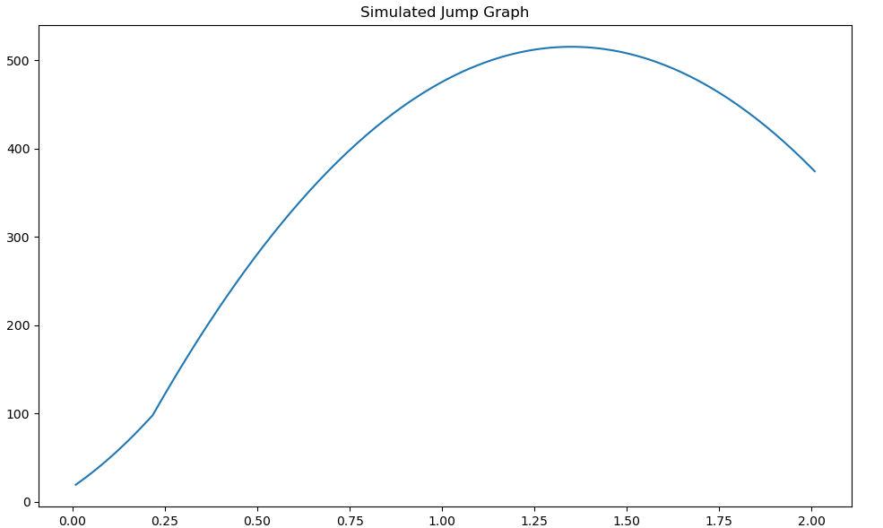

The Physics Of Jumping
There are several forces that can be acting on a Rocket League car at any moment and understanding their influence is an important step towards giving your bot accurate and dependable utilities. This section will be focused on the mechanics of jumping and how these forces interact to allow you to accurately simulate a jump and provide useful information such as how high your bot can reach and at what time they'll get there. So let's get started by first declaring these "forces" I've been referring to thus far.
Gravity
Under normal circumstances, gravity functions much like you'd expect. It constantly applies a force downwards towards the floor. By default, the force is 650 uu/s^2 but that's not a given. Luckily the current gravity value is supplied within the GameTickPacket (GameTickPacket.game_info.world_gravity_z) passed to your bot's get_output() every frame.
Sticky Force
This force is responsible for the magnet-like effect pulling your wheels to walls and other surfaces. This force unlike gravity is applied in the relative down direction pushing the car's wheels towards a surface in the immediate vicinity with the force of 325 uu/s^2. This effect only persists for a short time after jumping thankfully and is no longer a consideration after 3 frames in the air after a jump. This results in a force of 8.125 ((1/120) * 3 * 325) being negated from jumps.
Jump Impulse
The instantaneous force applied in the relative up direction (towards your car's ceiling) of 292 when the jump button is first pressed. This force is the same for the first jump as well as the second jump without a flip.
Jump Hold Bonus
This is the upwards velocity bonus granted for holding down the jump button on the first jump. It can grant a total additional 292 force in the relative upwards direction over 0.2s. Holding jump longer than 0.2s grants no additional bonus. A minimum of 3 ticks of jump bonus is applied to the first jump resulting in an additional 36.5 ((1/120) * 3 * 1460) force over the first 3 frames of a jump.
Throttle Acceleration
Believe it or not, throttle still has an effect on your car even while airborne. Forward throttle while airborne exerts a force of 66.667 uu/s^2 in your car's relative forward direction. Reverse throttle's effect is halved with a force of 33.334 uu/s^2 in the relative rear direction.
Implementing A Jump Simulation
The following code snippet provides an implementation of a jump simulation naively assuming the bot is perfectly flat on the ground with no initial velocity, gravity is at default settings and the bot executes a frame-perfect jump sequence.
def naive_double_jump_simulation(time_allowed: float) -> list:
gravity = -650
jump_impulse = 292
time_increment = 1 / 120
sticky_force = -325
sticky_timer = time_increment * 3
hold_bonus_increment = (292 * 5) * time_increment
max_hold_time = 0.2
simulated_z_velocity = 0
simulated_height = 17.01 # default sitting height of octane
simulation_time = 0
double_jumped = False
jump_slices = []
while simulation_time < time_allowed:
if simulation_time == 0:
simulated_z_velocity += jump_impulse
elif simulation_time > max_hold_time + time_increment and not double_jumped:
simulated_z_velocity += jump_impulse
double_jumped = True
if simulation_time < max_hold_time:
simulated_z_velocity += hold_bonus_increment
if simulation_time < sticky_timer:
simulated_z_velocity += sticky_force * time_increment
simulated_z_velocity += gravity * time_increment
simulated_height += simulated_z_velocity * time_increment
simulation_time += time_increment
jump_slices.append(simulated_height)
return jump_slices

Calling naive_doublejump_simulation(2.0) will return a list showing the simulated height of the car at every increment from 0 to 2 seconds into the future. A more robust solution should account for more variability in circumstances such as the car's current relative up direction as well as current velocity.
Useful Considerations For Implementing Jumping Simulations And Mechanics
- The second jump remains viable for between 1.25 and 1.45 seconds with the potential 0.2s time extension provided by holding the first jump for the maximum bonus duration.
- The maximum speed of a car in Rocket League is
2300. Any forces applied that would result in a magnitude exceeding2300will be applied as per usual but then normalized back down to the limit of2300.
Note: Rocket League's physics engine runs at 120hz so all calculations provided are based on that number as the base of a time step (1/120).